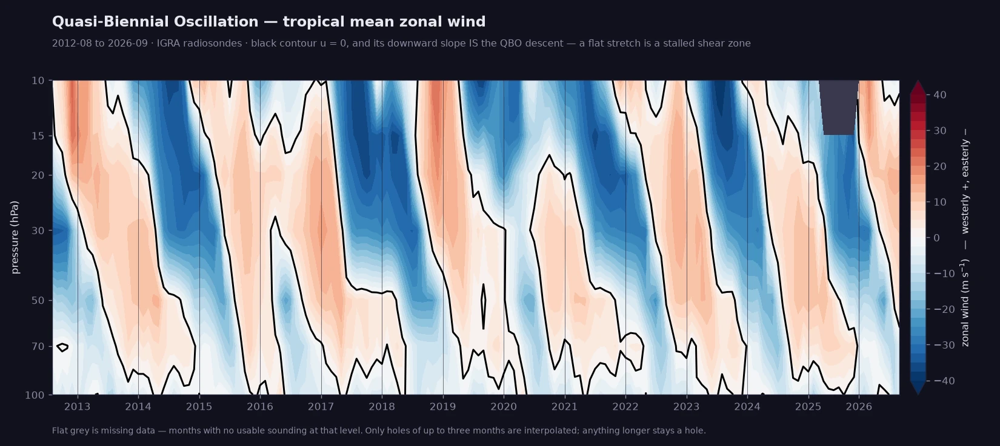
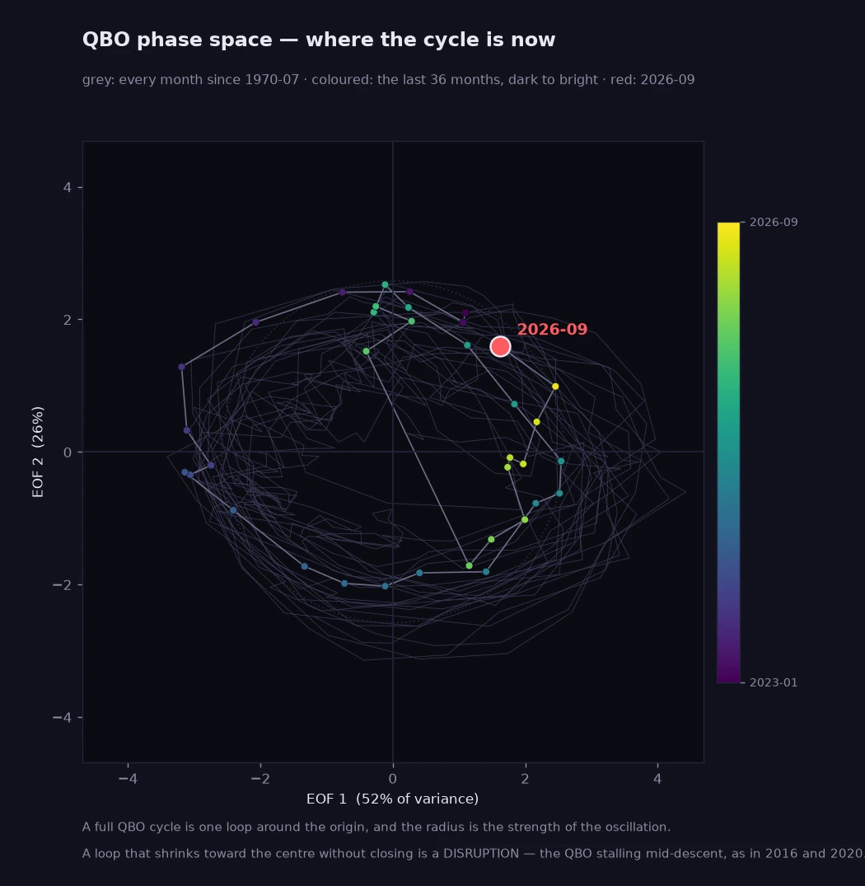
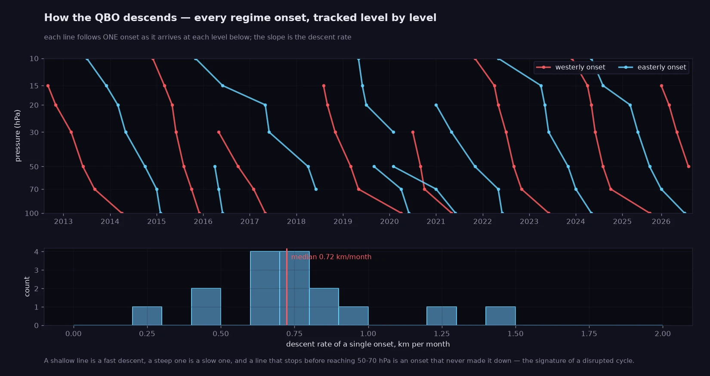
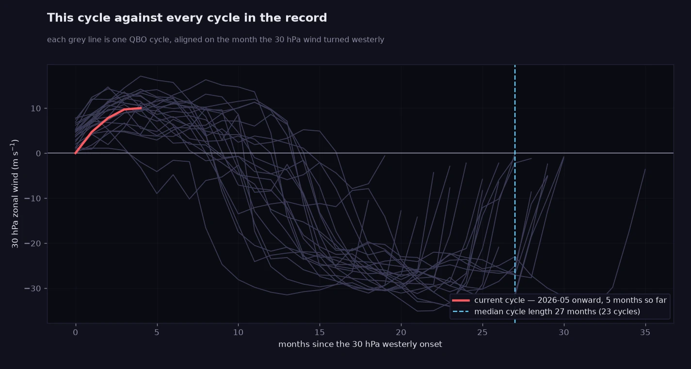

The Quasi-Biennial Oscillation — the ~28-month heartbeat of the equatorial stratosphere — read directly from balloons. Within ~10° of the equator the annual cycle in stratospheric zonal wind nearly vanishes, so a monthly multi-station mean of radiosonde winds at 10–100 hPa is the QBO: westerly and easterly regimes descending about 1 km/month. Built from 13 stations (Singapore, Kuala Lumpur, Bintulu, the Micronesia chain, five Amazon stations, Nairobi) — the same raw archive behind the Sounding Explorer.
The QBO is a descending pattern, so this is the only honest primary view: height against time, with the u = 0 contour drawn heavy. Its downward slope is the descent — read the rate straight off it. A flat stretch is a shear zone that has stalled, which is how both the 2016 and 2020 disruptions announce themselves.

The two leading EOFs of the wind profile, which between them carry most of the variance. One full QBO cycle is one loop around the origin and the radius is the strength of the oscillation — so a loop that shrinks toward the centre without closing is a disruption, the QBO stalling mid-descent. That is visible here and almost nowhere else.

Every regime onset, followed level by level as it arrives lower and lower. Tracking a single u = 0 height per month does not work — the QBO carries two or three crossings at once — but when each level changes regime is unambiguous, and chaining those gives one line per onset whose slope is a real descent rate. A line that stops before reaching 50–70 hPa is an onset that never made it down.

Every cycle since the record begins, aligned on the month the 30 hPa wind turned westerly, with the current one drawn over the top. "Unusually long" or "stalled" becomes something you can see rather than something a caption asserts.
